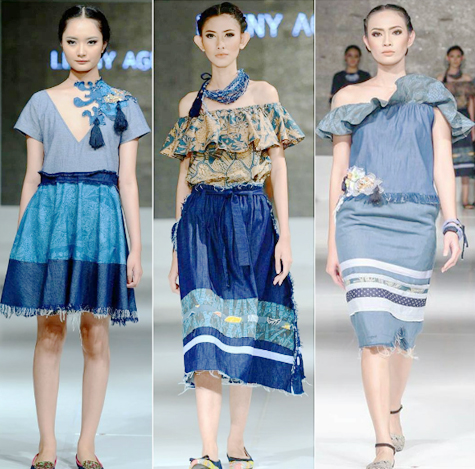
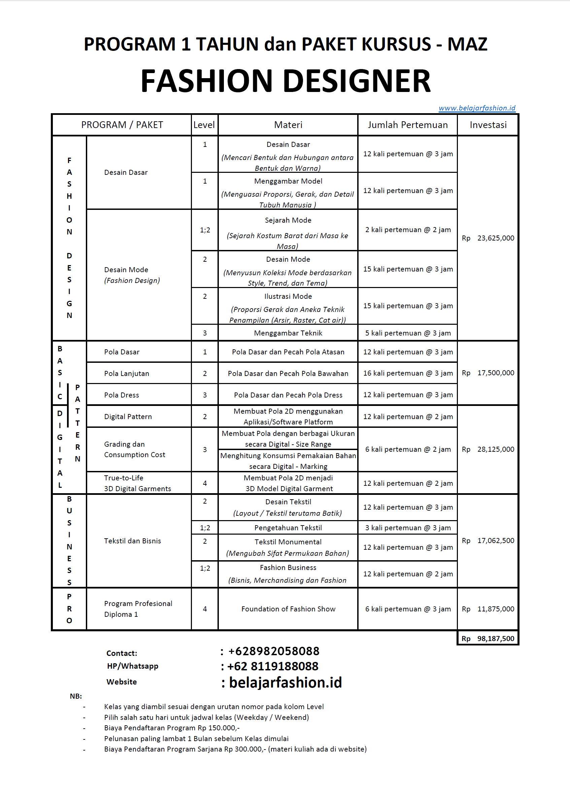
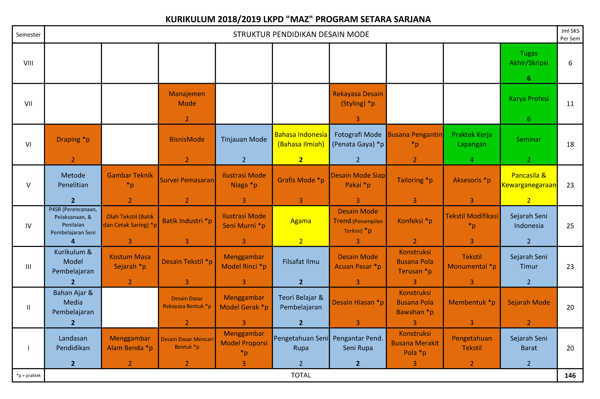
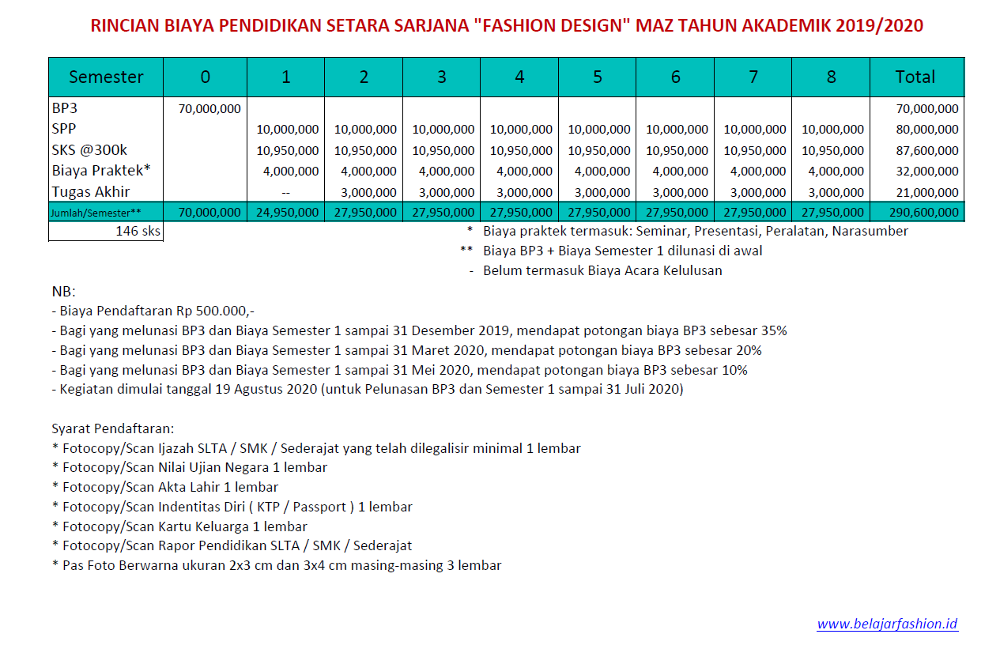

Education
Memiliki minat atau impian untuk bekerja di bidang mode/fashion adalah hal yang dapat ditekuni. Sebagian besar bisnis di dunia berkaitan dengan fashion dan industri terkait. Pengaruh fashion sangat besar pada penampilan para bintang film, selebriti, orang-orang terkenal, para pebisnis sukses, para eksekutif perusahaan, semua menyukai fashion dan memperhatikan penampilan dalam berpakaian. Mode dapat menjadi gaya hidup bagi orang, lebih menjadi ciri khas pribadi seseorang daripada sekedar bergaya dengan merk-merk mahal. Itulah sebabnya mengapa industri mode selalu berkembang dan bergulir tanpa pernah berakhir sejak berabad lalu.
Bekerja di bidang fashion banyak dipenuhi dengan variasi warna dan garis-garis desain serta detail. Memilih lembaga pendidikan yang tepat, dengan kurikulum lengkap, menggali pengetahuan tentang selera bentuk mode itu menjadi dasar langkah kita selanjutnya.
Menjadi seorang fashion designer/perancang gaun bukanlah satu-satunya tujuan kuliah dibidang mode. Kita bisa belajar menjadi seorang ahli pembeli barang-barang fashion, bisa meniti karir sebagai stylist atau koreografer, menjadi jurnalis/wartawan mode sama asiknya karena kita bisa menghadiri berbagai acara fashion show di seluruh dunia, bahkan kita bisa bekerja di perusahaan tekstil atau menjadi designer textile yang merancang motif kain, atau jika kalian menyukai pemasaran produk sebuah butik maka tidak ada salahnya menjadi sales hebat sebab kalian memahami apa yang kalian jual. Jadi banyak hal yang dapat dilakukan dengan berbekal ilmu fashion.
Program Vokasi setara Diploma Satu (D.I)
DAFTAR Sekarang di laman REGISTRATION. untuk mendapatkan Harga Spesial (tersedia kelas paketan / modul / kategori)

>>DAFTAR / REGISTRATION<<
Program Studi Desain Mode setara Sarjana (S1)
DAFTAR Sekarang di laman REGISTRATION. (tersedia kelas satuan)
 Maksimum 24 sks per Semester, khusus Semester 1 dan 2 maksimum 20 sks NB: Mata Kuliah Agama diselenggarakan sebagai syarat pada Pendidikan Perguruan Tinggi, Kami tidak menyelenggarakan Pendidikan Agama yang menitikberatkan atau spesifik pada Agama tertentu, Mata Kuliah ini diselenggarakan sesuai dengan Pancasila.
Rincian Biaya Program Studi "MAZ" Desain Mode setara Sarjana (S1):
 Untuk Perhitungan Kelas Satuan, Lihat Jumlah sks kelas dimaksud, lalu totalnya dikali harga per sks. Biaya lain selain sks dan jumlah semester yang dicapai, tetap mengikuti total tabel. Misalnya mengambil total 100 sks, maka total harga sks = 100 x 300.000 = 30.000.000, Jumlah Semester yang dicapai = 6 semester = 30.000.000, diluar BP3, SPP, Biaya Praktek, Tugas Akhir, dan Acara Kelulusan.>>Lihat Cara Daftar<<
>>DAFTAR / REGISTRATION<<
about
"MAZ" merupakan Lembaga Pendidikan Tinggi, Kursus, dan Pelatihan Pendidikan Desain di dalam naungan Yayasan Emerald Ivy Internasional yang menyelenggarakan ilmu pengetahuan dan program pelatihan Desain Mode bergaya dan selera untuk membentuk profesional kreatif agar berkembang dan berhasil di era digital global.
contact
Kebon Jeruk
Jl. Lapangan Bola No.9-9A,
Kebon Jeruk, Kebon Jeruk
sebelah Jasa Raharja, belakang RCTI,
Jakarta Barat, DKI Jakarta, 11530
HP: +62 8119188088
E-mail: mazcampus@gmail.com